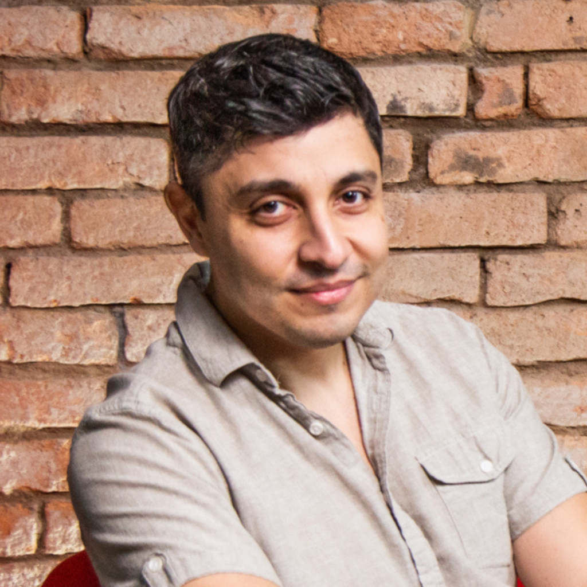

Guilherme Dei Svaldi é editor, escritor e game designer brasileiro conhecido por ser co-criador de Tormenta (RPG)
O Tormenta20 (anteriormente conhecido como Tormenta-RPG) é um jogo de interpretação de papéis, desenvolvido por Guilherme Dei Svaldi , JM Trevisan,
Leonel Caldela , Marcelo Cassaro eRogério Saladino . O jogo foi lançado como um sistema de RPG de mesa para GURPS, AD&D e 3D & T no Brasil em
uma edição comemorativa das 50 edições do Dragão Brasil . Uma versão digital para computador e Mac também foi lançada em 31 de março de 2015.
Tormenta20
é uma atualização comemorativa de 20 anos do sistema Tormenta-RPG . "Um sistema feito pensando em focar mais na história de regras difíceis" descreve um
dos criadores do sistema Marcelo Cassaro.
